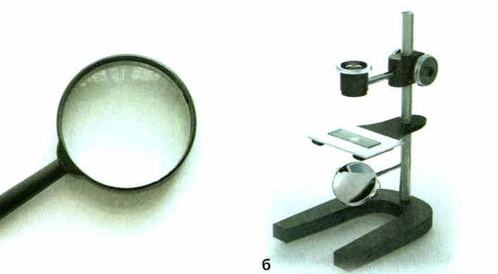
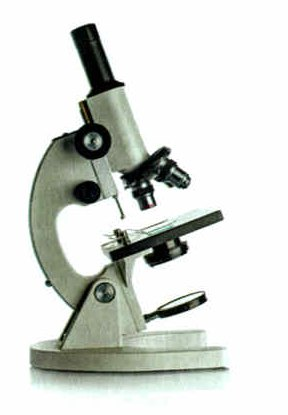
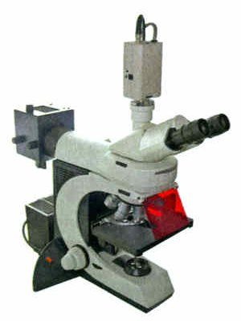
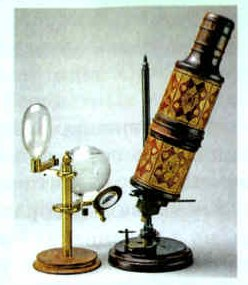
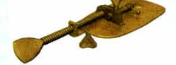
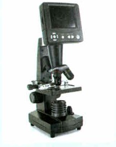

Устройство увеличительных приборов
Клетки многих организмов такие маленькие, что без специальных приспособлений их не рассмотреть. Поэтому для изучения клеток используют увеличительные приборы — лупы и микроскопы.
Лупа — самый простой увеличительный прибор: увеличительное стекло в оправе с ручкой. Лупы бывают ручные и штативные.
Ручная лупа (рис. 43, а) увеличивает в 2—20 раз. Работать с ней просто: поднеси лупу к объекту на такое расстояние, чтобы картинка стала чёткой.
Штативная лупа (рис. 43, б) увеличивает в 10—25 раз. В её оправе два увеличительных стекла, она закреплена на подставке — штативе. К штативу может быть прикреплён предметный столик с отверстием и зеркалом. На каждой лупе написана её кратность увеличения.
Лупой можно рассмотреть форму довольно крупных клеток. Но как они устроены внутри — нет. Для этого нужен прибор мощнее — микроскоп.
Световой микроскоп (от греч. микрос — малый и скопео — смотрю) — прибор, чтобы рассматривать то, что не видно глазом. Например, клетки.
Из чего он состоит (рис. 44):
• тубус — трубка;
• окуляр — сверху в тубусе, в него смотрят глазом (от лат. окулюс — глаз);
• объектив — снизу в тубусе, ближе к предмету (от лат. объектум — предмет);
• штатив — опора; тубус поднимают и опускают винтами;
• предметный столик — с отверстием в центре, под ним зеркало. Объект на предметном стекле кладут на столик и закрепляют зажимами.
В современных микроскопах вместо зеркала всё чаще ставят электрическую лампу.
Размеры клеток многих организмов настолько малы, что рассмотреть их без специальных приспособлений невозможно. Поэтому для изучения строения клеток используют увеличительные приборы — лупы и микроскопы.
Лупа — простейший увеличительный прибор. Лупа состоит из увеличительного стекла, которое для удобства работы вставлено в оправу с ручкой. Лупы бывают ручные и штативные.
Ручная лупа (рис. 43, а) может увеличивать рассматриваемый объект в 2—20 раз. Правила работы с лупой очень просты: лупу надо поднести к объекту исследования на такое расстояние, при котором изображение этого объекта станет чётким.
Штативная лупа (рис. 43, б) увеличивает объект в 10—25 раз. В её оправу вставлены два увеличительных стекла, укреплённые на подставке — штативе. К штативу также может быть прикреплён предметный столик с отверстием и зеркалом. На каждой лупе указывается кратность её увеличения.
Лупа позволяет рассмотреть форму достаточно крупных клеток, но изучить их строение при помощи этого прибора, увы, невозможно. Здесь необходим более мощный увеличительный прибор — микроскоп.
Световой микроскоп (от греч. микрос — малый и скопео — смотрю) — оптический прибор для рассматривания в увеличенном виде небольших, не различимых простым глазом предметов. С его помощью изучают, например, строение клеток. Световой микроскоп состоит из трубки, или тубуса (от лат. тубус — трубка). В верхней части тубуса находится окуляр (от лат. окулус — глаз). Он состоит из оправы и двух увеличительных стёкол. На нижнем конце тубуса находится объектив (от лат. объектум — предмет), состоящий из оправы и нескольких увеличительных стёкол. Тубус прикреплён к штативу и поднимается и опускается с помощью винтов. На штативе находится также предметный столик, в центре которого имеется отверстие и под ним зеркало. Рассматриваемый на предметном стекле объект помещается на предметный столик и закрепляется на нём с помощью зажимов (рис. 44).
В современных моделях световых микроскопов в качестве осветительной части всё чаще используют не зеркала, а электрические лампы.


▲ Найди на фото части микроскопа по схеме рядом — это задание 1 в «Моей лаборатории».
сверху, у глаза (окулюс — глаз)
снизу, у предмета (объектум — предмет)
Подсказка в самих словах: окуляр — для око, объектив — к объекту.
1. Во сколько раз увеличивают ручная и штативная лупы? Какая сильнее?
2. Что можно рассмотреть лупой, а для чего уже нужен микроскоп?
3. Где у микроскопа окуляр, а где объектив?
Рассматривание биологических объектов под микроскопом
Световой микроскоп подходит для прозрачных объектов: тонких срезов растительных и животных тканей, микроорганизмов в жидкости. Чтобы картинка была контрастнее, используют красители.
Как он работает: свет проходит сквозь прозрачный объект на предметном столике и попадает в объектив и окуляр. Они увеличивают изображение.
Современные световые микроскопы увеличивают до 2000 раз.
Как узнать увеличение: умножь число на окуляре на число на объективе. Окуляр ×10, объектив ×20 → 10 × 20 = 200 раз.
Световой микроскоп подходит для изучения прозрачных объектов (тонкие срезы растительных и животных тканей, микроорганизмы в жидкостях и т. п.). Для повышения контраста изображения используются красители. Главный принцип работы светового микроскопа заключается в том, что лучи света проходят через прозрачный (или полупрозрачный) объект исследования, который находится на предметном столике, и попадают на систему линз объектива и окуляра, увеличивающих изображение. Современные световые микроскопы способны увеличивать изображение до 2000 раз. Чтобы узнать, насколько увеличивается изображение с помощью данного микроскопа, надо умножить число, указанное на окуляре, на число, указанное на используемом объективе. Например, если окуляр даёт 10-кратное увеличение (×10), а объектив — 20-кратное (×20), то общее увеличение 10 × 20 = 200 раз.
4. Почему под световым микроскопом рассматривают тонкие срезы, а не целый кусок?
5. На окуляре ×10, на объективе ×40. Во сколько раз увеличит микроскоп?
Цифровой микроскоп
Сейчас биологи всё чаще пользуются цифровым микроскопом (рис. 45). Это микроскоп с фото- или видеокамерой, подключённый к компьютеру со специальной программой.
С ним можно получить сильно увеличенную картинку объекта или процесса, передать её на компьютер, разобрать, сохранить и показать всем через проектор.
Главные плюсы: картинку можно передавать на расстояние прямо во время наблюдения, разбирать на экране компьютера, сохранять на флешку и редактировать.
На уроке это очень удобно: камера подключена к компьютеру и проектору, и микроскоп сразу виден всему классу. Не нужно каждому смотреть в окуляр и не нужно много микроскопов — хватит одного.
В последнее время биологи всё чаще используют цифровой микроскоп (рис. 45). Так называют увеличительный прибор, состоящий из микроскопа с присоединённой к нему фото- или видеокамерой и персонального компьютера с установленным на нём специальным программным обеспечением. При работе с цифровым микроскопом можно получить многократно увеличенное изображение исследуемого объекта или процесса, а также передать полученные данные на компьютер для последующего их анализа, а после сохранить результаты исследования для дальнейшего использования или же продемонстрировать их всем желающим при помощи проектора.
Основными достоинствами цифровых микроскопов является способность к передаче (трансляции) результатов исследований объектов на расстоянии в режиме реального времени, а также возможность проведения анализа объектов наблюдения на экране монитора персонального компьютера. Кроме того, использование цифрового микроскопа даёт возможность сохранения результатов исследования на цифровые носители информации (флеш-накопители и др.), а также позволяет редактировать уже сохранённую информацию при помощи специального программного обеспечения.
Цифровой микроскоп весьма удобен и на уроке биологии, так как наличие цифровой камеры, подключаемой к компьютеру и проектору, делает микроскоп доступным сразу всему классу. Это приводит к тому, что каждому ученику во время урока не нужно самому смотреть в объектив, и, следовательно, отпадает необходимость в наличии нескольких микроскопов в классе — достаточно всего лишь одного изображения объекта, находящегося на предметном столике этого микроскопа, изображение которого выводится на общий экран.

смотришь в окуляр одним глазом — видишь только ты
камера + компьютер — картинку видят все, её можно сохранить
Цифровой = световой + камера и экран.
6. Из чего состоит цифровой микроскоп?
7. Почему цифровой микроскоп удобен на уроке?
Итоги и «Моя лаборатория»
Лупа: ручная и штативная · Световой микроскоп: тубус, окуляр, объектив, штатив · Цифровой микроскоп
- Какие увеличительные приборы используются для изучения микроскопических объектов?
- Что представляет собой лупа и какое увеличение она даёт?
- Как устроен световой микроскоп?
- Как определить увеличение, которое даёт световой микроскоп?
- Чем цифровой микроскоп отличается от светового?
Почему с помощью светового микроскопа нельзя изучать непрозрачные предметы?
- Рассмотрите невооружённым глазом мякоть плодов томата, арбуза, яблока. Что характерно для их строения?
- Рассмотрите кусочки мякоти плодов под лупой. Зарисуйте увиденное, рисунки подпишите. Какую форму имеют клетки мякоти плодов?
- Поставь микроскоп штативом к себе, в 5—10 см от края стола. Зеркалом направь свет в отверстие предметного столика.
- Положи предметное стекло с препаратом на столик и закрепи зажимами.
- Винтом плавно опусти тубус так, чтобы нижний край объектива был в 1—2 мм от препарата.
- Смотри в окуляр одним глазом, не закрывая и не зажмуривая другой. Медленно поднимай тубус винтами, пока не появится чёткая картинка.
- После работы убери микроскоп в футляр. Микроскоп — хрупкий и дорогой прибор: работай аккуратно, строго по правилам.
- Устройство светового микроскопа и приёмы работы с ним. Изучите устройство микроскопа по рисунку 44. Найдите тубус, окуляр, объектив, штатив с предметным столиком, зеркало, винты. Выясните, какое значение имеет каждая часть. Познакомьтесь с правилами работы с микроскопом, отработайте порядок действий и выучите правила.
- Прочитайте текст об изобретении микроскопов. Как вы думаете, какое значение для развития биологии имели эти изобретения? Обсудите этот вопрос с товарищами.
Первые микроскопы с двумя линзами изобрели в конце XVI века. Но только в 1665 году англичанин Роберт Гук применил свой улучшенный микроскоп, чтобы изучать организмы (рис. 46). Он рассматривал тонкий срез пробки (коры пробкового дуба) и насчитал до 125 миллионов ячеек на один квадратный дюйм — это квадрат со стороной 2,5 см! Такие же ячейки он нашёл в сердцевине бузины и стеблях растений. Он назвал их клетками.
В конце XVII века голландец Антони ван Левенгук сделал микроскоп сильнее — с увеличением до 270 раз (рис. 47). С ним он открыл микроорганизмы. Его микроскоп — металлическая пластинка с увеличительным стеклом; объект сидел на кончике острой иглы, а винты помогали навести резкость.
В XX веке изобрели электронный микроскоп — он увеличивает в десятки и сотни тысяч раз (рис. 48).
Первые микроскопы с двумя линзами были изобретены в конце XVI в. Однако только в 1665 г. англичанин Роберт Гук применил усовершенствованный им микроскоп для исследования организмов (рис. 46). Рассматривая в микроскоп тонкий срез пробки (коры пробкового дуба), он насчитал до 125 млн пор, или ячеек, в одном квадратном дюйме (2,5 см). В сердцевине бузины, стеблях различных растений Гук обнаружил такие же ячейки. Он дал им название клетки.
В конце XVII в. голландец Антони ван Левенгук сконструировал более совершенный микроскоп, дающий увеличение до 270 раз (рис. 47). С его помощью он открыл микроорганизмы.
В верхней части металлической пластинки закреплено увеличительное стекло. Наблюдаемый объект располагался на кончике острой иглы. Винты служили для фокусировки.
В XX в. был изобретён электронный микроскоп, увеличивающий изображение в десятки и сотни тысяч раз (рис. 48).



Проверь себя
Ошиблась — не страшно, попробуй другую кнопку.
В неё смотрят глазом
Окулюс — глаз.
Ближе всего к предмету
Объектум — предмет.
Трубка, в которой окуляр и объектив
Тубус — трубка.
Опора, к которой всё прикреплено
Штатив держит все части.
Сюда кладут предметное стекло и закрепляют зажимами
С отверстием, под ним зеркало.
Муравья на ферме
Муравей виден и так (а лупой — деталей больше).
Форму клеток мякоти помидора
Крупные клетки помидора видны под лупой.
Строение клетки
Лупа покажет только форму — строение видно в микроскоп.
Амёбу
Одноклеточные почти не видны без микроскопа.
Люсю
Дегу прекрасно видно и без приборов.
1. Во сколько раз увеличивает ручная лупа?
2. Куда смотрят глазом в микроскопе?
3. Окуляр ×10, объектив ×20. Какое увеличение?
4. Почему в световом микроскопе изучают прозрачные объекты?
5. Кто дал название «клетка»?
6. Кто открыл микроорганизмы?
Расскажи вслух
Лупа
- Простейший увеличительный прибор: увеличительное стекло в оправе.
- Ручная — в 2—20 раз, штативная — в 10—25 раз; на лупе указана кратность.
- Лупой видна форма крупных клеток, но не их строение.
Устройство светового микроскопа
- Тубус с окуляром сверху и объективом снизу.
- Штатив с винтами, предметный столик с отверстием и зажимами, зеркало.
- Увеличение = окуляр × объектив (10 × 20 = 200), до 2000 раз.
История микроскопа
- Роберт Гук, 1665 год: ячейки в пробке — «клетки».
- Левенгук, конец XVII века: увеличение до 270 раз, открыл микроорганизмы.
- XX век: электронный микроскоп — в сотни тысяч раз.